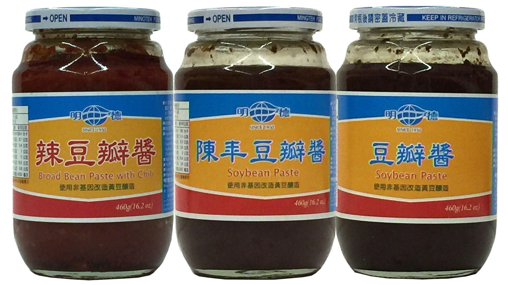
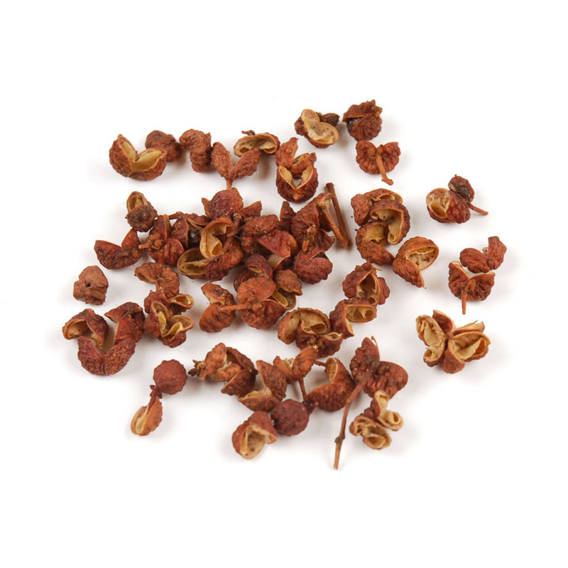
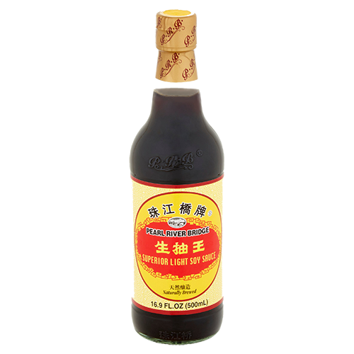

mapo tofu
Not really eaten this classic dish that often (done properly) so this is probably a bit of a bastardized version but very quick and tasty.
- tofu cut into cubes
- Tbsp garlic, finely chopped
- 3-4 stalks of spring onions, finely chopped
- Tbsp ginger, finely chopped
- salt
- hot fermented bean paste (doubanjiang)
- 1 tsp sichuan peppercorns
- soy 
- Potato starch/cornstarch/other starch flour

- Toast peppercorns first in hot dry pan. Remove them.
- Fry finely chopped ginger, garlic and spring onions and peppercorns in a bit of oil. Not too much oil as you’re about to add the beef mince which will make its own oil.
- After frying the beef mince til it seems a bit browned, add about 4tbsp of the doubanjiang with a small splash of soy sauce. The bean paste is the base of the dish but is also very salty, so don’t add too much unless you’re cooking lots of tofu.
- Cook the fragrant beany beef on moderate heat for a min, add a good splash of water so the mixture is quite wet, then add diced tofu to simmer. Handle tofu gently but try and get everything mixed in the liquid. Simmer down, there should be enough watery liquid for a big sauce but not a small soup.
- Take a good teaspoon of potato starch (or corn starch) and put it in a small bowl with a big glug of water to cover it. Stir it about with your finger until the starch clouds the water and no lumps remain. Add this to the beef/tofu mix and stir gently so the starch thickens the sauce. Serve with chopped coriander on top.